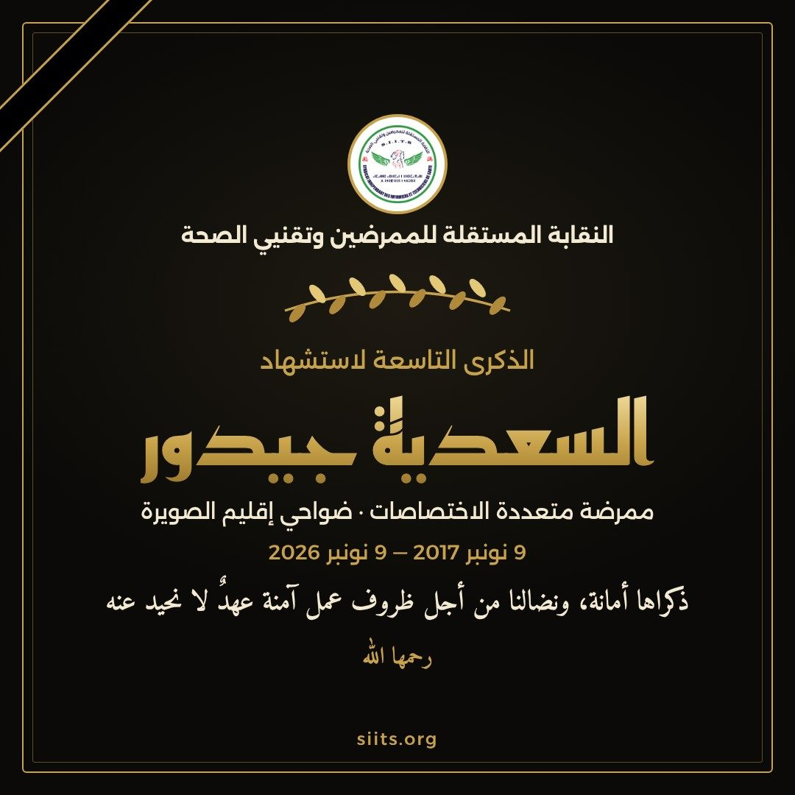

في الذكرى التاسعة لاستشهاد الممرضة السعدية جيدور

في مثل هذا اليوم، 9 نونبر 2017، استشهدت الممرضة متعددة الاختصاصات السعدية جيدور بضواحي إقليم الصويرة، وهي تؤدي واجبها المهني في خدمة المرضى.
تسع سنوات مرت، وما زالت ذكراها حاضرة بيننا، شاهدةً على تضحيات الممرضين وتقنيي الصحة وعلى ظروف العمل الصعبة التي يواجهونها كل يوم.
وإذ نستحضر روحها الطاهرة، تجدد النقابة المستقلة للممرضين وتقنيي الصحة العهد على مواصلة النضال من أجل ظروف عمل آمنة وكريمة لكل نساء ورجال الصحة.
ذكراها أمانة، ونضالنا من أجل ظروف عمل آمنة عهدٌ لا نحيد عنه. رحمها الله وأسكنها فسيح جناته.
فتح في تطبيق النقابة